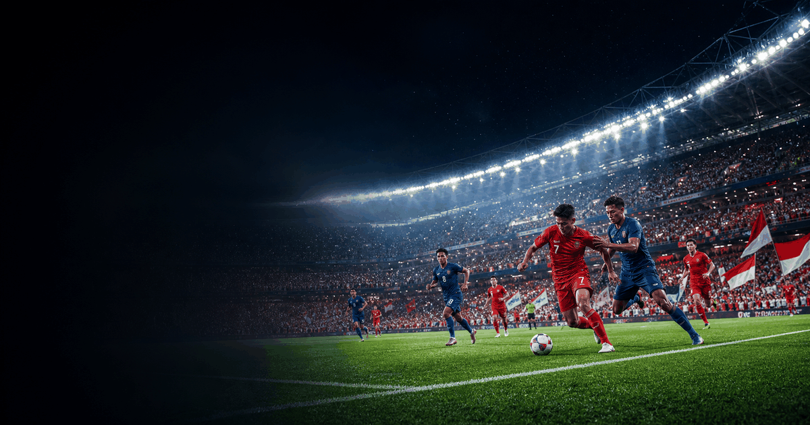
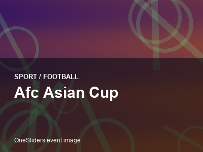

AFC Asian Cup
First final1956
Next hostSaudi Arabia
Top title leaders
1 JapanAsian Cup wins1992200020042011
JapanAsian Cup wins1992200020042011
4
2 Saudi ArabiaAsian Cup wins198419881996
Saudi ArabiaAsian Cup wins198419881996
3
3 IranAsian Cup wins196819721976
IranAsian Cup wins196819721976
3
4 QatarAsian Cup wins20192023
QatarAsian Cup wins20192023
2

More footballFootball topicMore finals, tournaments and calendar moments.
AFC Asian Cup 2027 in Saudi Arabia
AFC Asian Cup guide
AFC Asian Cup belongs in the sport, football, afc asian cup collection on OneSliders. Use this page as the compact evergreen entry point: start with what the event is, then scan the current edition details, location cues, schedule context and links back into the wider topic. The page is kept short by design, but it should still give enough unique context to distinguish this event from nearby fixtures, annual editions and broader category listings.